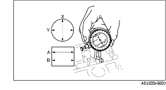
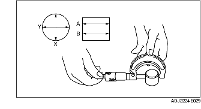

Tappet inspection
1. Measure the diameter of each tappet bore using the caliper gauge. Measurement points are the inner diameter in the X and Y directions, at the points (A and B) as shown in the figure.

2. Measure the tappet body outer diameter of each valve using the micrometer. Measure the outer diameter in the X and Y directions, at the four points (A and B) as shown in the figure.

3. Calculate the clearance between the tappet and the related bore by subtracting the inner diameter of the tappet bore from the outer diameter of the corresponding tappet.